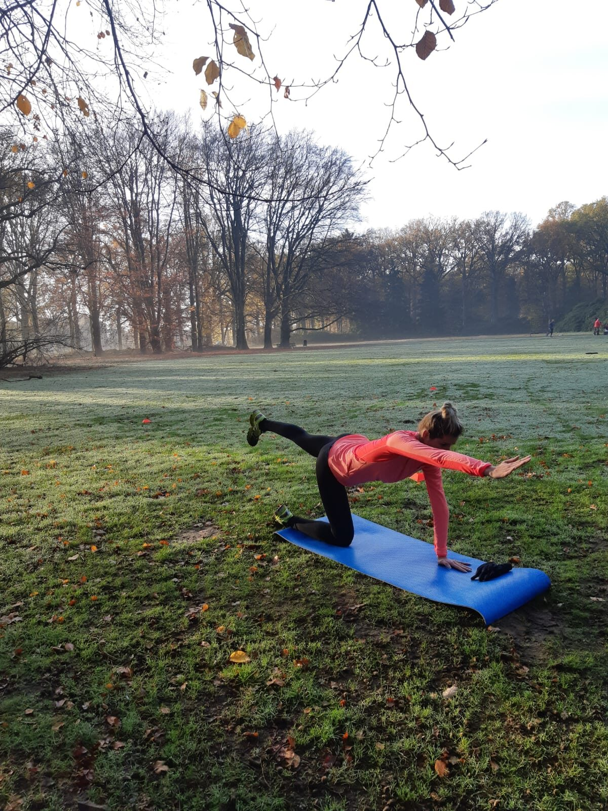

Beste personal trainer voor vrouwen: zo maak je de juiste keuze
Waar moet een goede personal trainer aan voldoen, welke fouten maak je beter niet en welke aanbieders springen eruit?

Krachttraining voor vrouwen: sterker zonder 'bulky' te worden
Waarom spieren je beste bondgenoot zijn voor figuur, botten en stofwisseling.

Sporten in de overgang: minder klachten, meer energie
Hoe beweging opvliegers, stemmingswisselingen en gewichtstoename helpt temperen.

Fit blijven tijdens je zwangerschap: wat kan wél?
Veilig bewegen met een groeiende buik, trimester voor trimester.

Afvallen na je 40e: waarom het anders werkt (en wat wél helpt)
Je stofwisseling verandert, je aanpak dus ook. Zo blijf je op gewicht.

Me-time voor drukke moeders: sporten zonder schuldgevoel
Waarom tijd voor jezelf geen luxe is en hoe je die praktisch organiseert.

Hormonen en sport: zo werken ze samen (of tegen je)
Van cyclus tot cortisol: wat hormonen doen met je training en andersom.